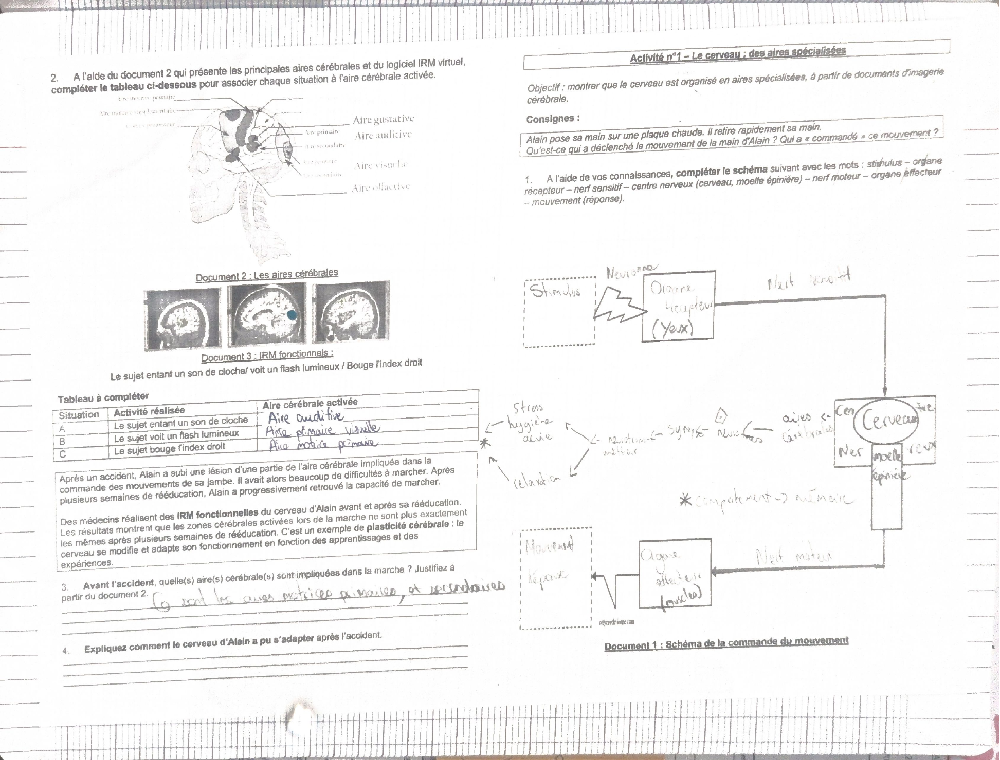
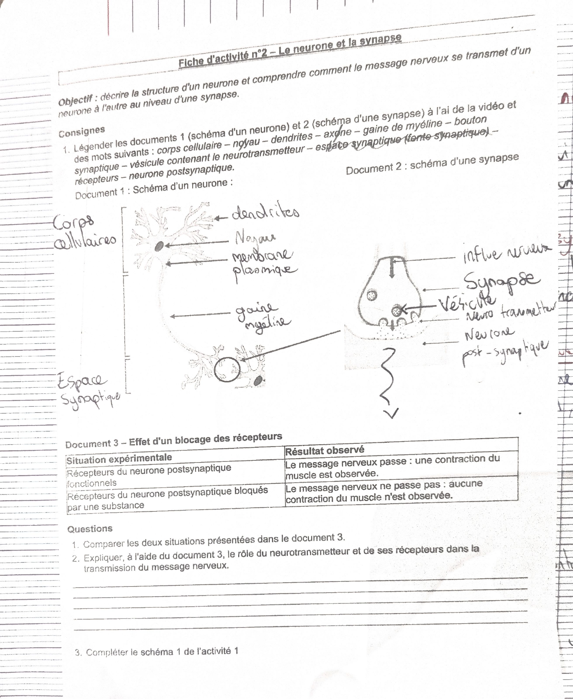

Le premier chapitre de l’année ouvre le thème 3, « Le corps humain et la santé ».
La lecture complète reprend les deux fiches d’activité, la fiche méthode et le programme. La synthèse garde les idées à savoir dans l’ordre du cours.
L’extra va plus loin que le cahier, dans le même chapitre.
Le cerveau, partie de l’encéphale, est organisé en aires cérébrales. Chacune est spécialisée dans une fonction : motricité, langage, vision, audition.
L’IRM fonctionnelle permet de voir quelles aires s’activent pendant une tâche.
Le cerveau s’adapte : les connexions entre neurones se modifient au cours de la vie, notamment pendant les apprentissages. C’est la plasticité cérébrale.
Le système nerveux est fait de neurones reliés en réseaux. Un neurone : un corps cellulaire, des dendrites qui reçoivent le message, un axone qui le transmet sous forme d’un signal électrique, l’influx nerveux.
Synapse : zone de contact entre deux neurones. Le message y devient chimique : un neurotransmetteur est libéré, traverse l’espace synaptique et déclenche un nouveau message électrique dans le neurone suivant.
II. Les conditions d’un bon fonctionnement
Le fonctionnement du système nerveux dépend de l’hygiène de vie.
Le favorisent : un sommeil suffisant, le sport régulier.
Le perturbent, parfois durablement : les écrans le soir, l’alcool, le tabac, un stress important, le cannabis.
Méthode · début du cahier
Consignes pour travailler en SVT
Matériel à chaque séance : le cahier de SVT et le cahier d’exercices SVT cycle 4, Lelivrescolaire.
Trois couleurs dans le cahier. Noir : les activités, à comprendre. Bleu : les leçons, à comprendre. Rouge : les définitions, les titres et les conclusions, à apprendre par cœur.
Après chaque séance : relire la leçon le soir même et la veille du cours suivant, finir les exercices, apprendre l’orthographe et la définition des mots nouveaux, faire signer et corriger les contrôles.
De courtes évaluations de connaissances ont lieu environ toutes les 3 semaines.
Les évaluations de fin de séquence sont annoncées une semaine avant. Utiliser la fiche de révision (FR) collée en fin de leçon.
Avant l’évaluation, vérifier : les définitions en rouge sont connues, les notions en bleu et les activités en noir sont comprises, les fiches méthode du chapitre sont relues.
S’entraîner avec le cahier d’exercices, corrigé sur Pronote (monENT Occitanie → Scolarité → Pronote → Cahier de texte), en corrigeant avec une autre couleur. Les exercices corrigés rapportés le jour de l’évaluation comptent en bonus.
Pronote : utiliser son propre code élève, retrouver les traces écrites dans « Contenu et ressources SVT » en cas d’absence, contacter le professeur par la messagerie.
Programme · année 2026-2027
Les chapitres de 3e
Tous les chapitres du cycle 4 sont à réviser pour le brevet. Les pages sont celles du cahier d’exercices Lelivrescolaire.
Système nerveux et comportement responsable (thème 3). Pages 72-73 et 88.
Monde microbien et santé : micro-organismes, réactions immunitaires, prévention, lutte contre le SIDA (thème 3). Pages 78-81, exercices p. 15 et p. 33.
Changements climatiques passés et actuels, avec exposés (thème 1). Pages 34-35, 40-43, exercice p. 10.
Diversité et stabilité génétique des êtres vivants (thème 2). Pages 58-63, exercices p. 11 et p. 31.
Biodiversité et évolution : histoire de la Terre, évolution de la vie, théorie de l’évolution (thème 2). Pages 66-69.
Les autres chapitres du tableau sont vus avant la 3e et reviennent en rappels : ressources naturelles, parenté des êtres vivants, alimentation et digestion, reproduction. Pour ces deux derniers, le tableau indique « rappels fin d’année ? ».
Chapitre 1 · activité 1
Le cerveau : des aires spécialisées
Situation de départ : Alain pose sa main sur une plaque chaude et la retire rapidement. Qu’est-ce qui a déclenché le mouvement ? Qui l’a « commandé » ?
Schéma de la commande du mouvement
Stimulus → organe récepteur → nerf sensitif → centre nerveux (cerveau et moelle épinière) → nerf moteur → organe effecteur (muscle) → mouvement (réponse).
Retouche signalée : sur le schéma, Ruben a écrit « yeux » comme organe récepteur. Dans la situation de la plaque chaude, c’est plutôt la peau de la main. Il a aussi écrit « neurone » sur la flèche du stimulus. À vérifier avec le corrigé.
Notes ajoutées autour du schéma : aires cérébrales, neurones, synapse, neurotransmetteur, puis stress, hygiène de vie, relaxation, et « comportement → mémoire ». Ce sont les notions qui arrivent dans la suite du chapitre.
Tableau : quelle aire s’active ?
A. Le sujet entend un son de cloche : aire auditive.
B. Le sujet voit un flash lumineux : aire visuelle primaire.
C. Le sujet bouge l’index droit : aire motrice primaire.
Le cas d’Alain
Après un accident, une lésion d’une aire motrice empêche presque Alain de marcher. Après plusieurs semaines de rééducation, il remarche. Les IRM montrent que les zones activées pendant la marche ne sont plus les mêmes : c’est la plasticité cérébrale.
Question 3, réponse de Ruben : avant l’accident, ce sont les aires motrices primaires et secondaires qui sont impliquées dans la marche.
Question 4, « Expliquez comment le cerveau d’Alain a pu s’adapter » : pas encore remplie.

Fiche d’activité n° 1, avec le schéma complété et le tableau des aires.Chapitre 1 · leçon, partie I
Rappels : le fonctionnement du système nerveux
1. Le cerveau (partie de l’encéphale) est organisé en zones appelées aires cérébrales, chacune spécialisée dans une fonction précise (motricité, langage, vision, audition).
L’imagerie médicale (IRM fonctionnelle) permet de visualiser l’activité de ces aires lors de la réalisation d’une tâche.
Le cerveau conserve une capacité d’adaptation appelée plasticité cérébrale : les connexions entre neurones peuvent se modifier au cours de la vie, notamment lors des apprentissages.
2. Le système nerveux est constitué de cellules appelées neurones, reliées entre elles en réseaux.
Un neurone est formé d’un corps cellulaire, de dendrites (qui reçoivent le message) et d’un axone (qui transmet le message sous forme d’un signal électrique appelé influx nerveux).
La zone de contact entre deux neurones est appelée synapse. Le message y change de nature : il devient chimique grâce à la libération d’une molécule, le neurotransmetteur, qui traverse l’espace synaptique et déclenche un nouveau message électrique dans le neurone suivant.
Numérotation : le cahier écrit « 1/ Rappels », puis « 2/ », puis « II/ ». La page la range en partie I (points 1 et 2) et partie II.
À apprendre par cœur
Les définitions écrites en rouge
D’après la fiche méthode, le rouge sert aux définitions à savoir par cœur. Dans le scan, Ruben a écrit ces cinq mots en rouge, tous dans le point 2 de la leçon. Les titres sont aussi en rouge.
Neurones
Cellules qui constituent le système nerveux. Elles sont reliées entre elles en réseaux.
Dendrites
Prolongements du neurone qui reçoivent le message.
Axone
Prolongement du neurone qui transmet le message sous forme d’un signal électrique.
Influx nerveux
Le signal électrique transmis par l’axone.
Synapse
Zone de contact entre deux neurones. Le message y devient chimique grâce au neurotransmetteur.
« Aires cérébrales », « plasticité cérébrale » et « neurotransmetteur » ne sont pas écrits en rouge dans le cahier. Ils sont à comprendre, et ils reviennent souvent dans les questions.
Chapitre 1 · activité 2
Le neurone et la synapse
Objectif : décrire la structure d’un neurone et comprendre comment le message nerveux passe d’un neurone à l’autre au niveau d’une synapse.
Légendes de Ruben
Schéma du neurone : dendrites, noyau, membrane plasmique, gaine de myéline, corps cellulaire.
Schéma de la synapse : influx nerveux, synapse, vésicule, neurotransmetteur, neurone postsynaptique.
Retouche signalée : « espace synaptique » est écrit en face de l’accolade du bas du neurone, à l’endroit où l’on attend plutôt l’axone. Les mots « axone », « bouton synaptique » et « récepteurs » de la liste ne sont pas encore placés. À vérifier avec le corrigé.
Blocage des récepteurs
Récepteurs du neurone postsynaptique fonctionnels : le message passe, le muscle se contracte.
Récepteurs bloqués par une substance : le message ne passe pas, aucune contraction.
Questions 1 (comparer les deux situations) et 2 (rôle du neurotransmetteur et de ses récepteurs) : pas encore remplies.

Fiche d’activité n° 2, schémas du neurone et de la synapse légendés par Ruben.Chapitre 1 · leçon, partie II
Les conditions d’un bon fonctionnement du système nerveux
Le fonctionnement du système nerveux dépend de l’hygiène de vie. Le sommeil suffisant et le sport régulier le favorisent ; les écrans le soir, l’alcool, le tabac, le stress important et le cannabis le perturbent, parfois de façon durable.
Exercice 2, réponses de Ruben
Grâce à la relaxation, on se concentre plus sur le contrôle et on diminue notre stress.
Question 3 : le sport favorise le bon fonctionnement, ainsi qu’un sommeil suffisant et une relaxation avant quelque chose d’important.
L’énoncé de l’exercice 2 n’est pas dans le scan : seules les réponses sont recopiées.
Cette partie n’est pas dans le cahier de Ruben. Ce sont des connaissances ajoutées, dans le périmètre du chapitre, pour aller plus loin. Ce qui compte pour le contrôle reste le cours et la fiche de révision de la professeure.
Extra · le cerveau
Quelques chiffres et repères
Le cerveau humain compte environ 86 milliards de neurones. Chacun peut être relié à des milliers d’autres.
La commande est croisée : l’hémisphère gauche commande le côté droit du corps, et inversement. Pour bouger l’index droit, c’est l’aire motrice de l’hémisphère gauche qui s’active.
Chaque grande fonction a sa région : la vision à l’arrière du cerveau, l’audition sur les côtés, la commande des mouvements dans une bande au sommet, à l’avant.
Une aire du langage porte le nom de Paul Broca, un médecin français qui l’a décrite en 1861 chez un patient qui ne pouvait plus parler.
L’IRM fonctionnelle ne voit pas directement les neurones : elle repère les zones où le sang apporte plus d’oxygène, parce que les neurones actifs en consomment davantage.
Extra · le message nerveux
Vitesse et réflexes
La gaine de myéline entoure l’axone comme un isolant. Elle accélère l’influx nerveux, qui peut dépasser 100 m/s.
Retirer sa main d’une plaque chaude est un réflexe. Le message va jusqu’à la moelle épinière, qui renvoie directement l’ordre au muscle, sans attendre le cerveau. C’est plus rapide. La douleur est ressentie juste après, quand le message arrive au cerveau.
Extra · la synapse
Ce qui agit sur les synapses
Quelques neurotransmetteurs : l’acétylcholine commande la contraction des muscles ; la dopamine joue un rôle dans le plaisir et la motivation.
Le curare, un poison de chasse d’Amérique du Sud, bloque les récepteurs des muscles : le message ne passe plus, les muscles sont paralysés. C’est une situation proche de celle du document 3 de l’activité 2.
La nicotine du tabac ressemble à l’acétylcholine et se fixe sur certains de ses récepteurs. Le cannabis et l’alcool perturbent aussi la transmission dans les synapses. C’est pour cela qu’ils modifient l’attention, les réflexes et la mémoire, et qu’ils peuvent rendre dépendant.
Extra · hygiène de vie
Sommeil, écrans, apprentissage
À l’adolescence, on conseille entre 8 et 10 heures de sommeil par nuit.
La lumière des écrans le soir retarde la fabrication de la mélatonine, l’hormone qui aide à s’endormir.
Pendant le sommeil, le cerveau trie et consolide ce qu’on a appris dans la journée. Relire la leçon le soir, puis dormir, aide vraiment à retenir.
La plasticité cérébrale explique aussi les progrès : s’entraîner à un instrument ou à un sport renforce les connexions des aires utilisées.
Tu as fini de lire ?
Le quiz sert à vérifier ce que tu as retenu, pas à apprendre. Lis d’abord le cours en entier (Complet), relis la Synthèse, et seulement ensuite teste-toi.